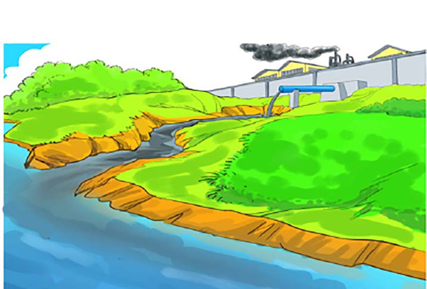

people. Furthermore, industries create opportunities for individuals to become self-employed by establishing entrepreneurial activities around industrial areas.
Effects of industrial activities on the environment
Industries cause environmental pollution as they produce harmful gases, smoke, dust, solid and liquid wastes, and noises. Such pollution can cause various diseases including skin diseases, cough and flu. Industrial smoke contributes to climate change. Climate change is associated with extreme flood events and prolonged drought. In addition, improper discharge of liquid wastes can lead to water and soil pollution, hence affecting the organisms that live on land and in water. Moreover, improper disposal of solid waste from industries such as plastic bags or plastic bottles damage the environment. Figure 9 illustrates how industries pollute the environment.
Untreated sewage from an industry
Smoke from an industry
Smoke from an industry
River
